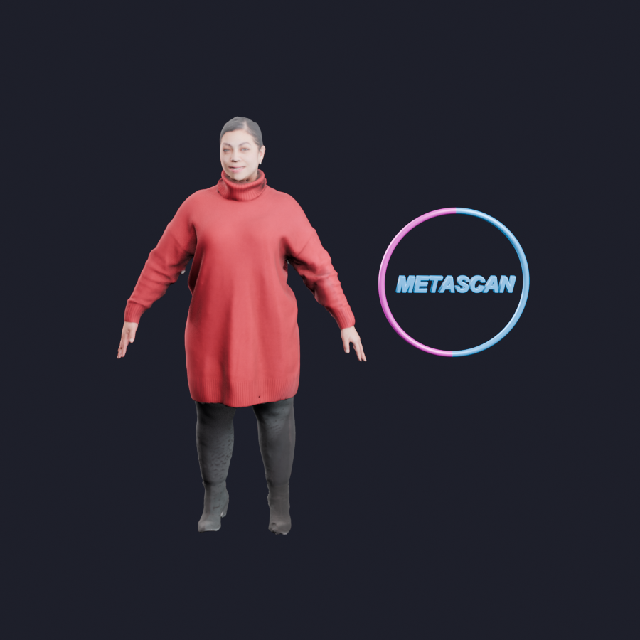

META SCAN AR - DRAFT

Preparing a model…
Draft preview: place models in AR. QR-to-room anchoring is still in development. In AR, pinch to resize, drag to move, and rotate with two fingers. Close AR and tap the arrows for another model.

Draft preview: place models in AR. QR-to-room anchoring is still in development. In AR, pinch to resize, drag to move, and rotate with two fingers. Close AR and tap the arrows for another model.